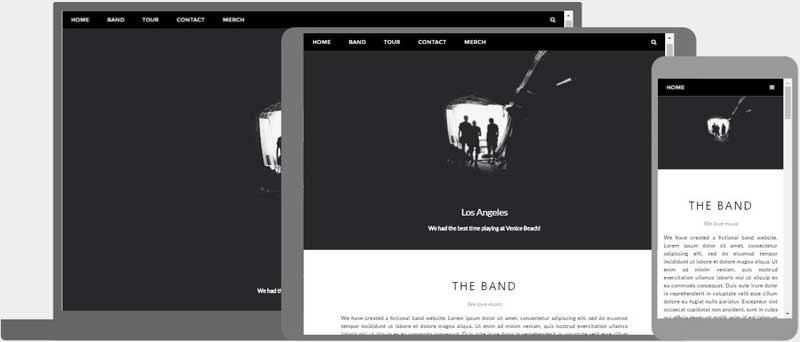
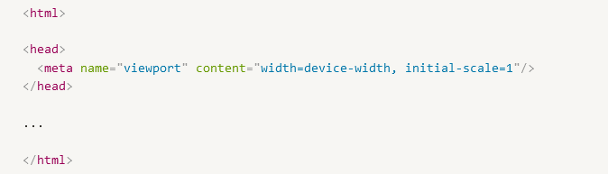

Thiết kế ứng dụng web dạng responsive là một cách thiết kế ứng dụng web sao cho ứng dụng hiển thị tốt và có thể sử dụng được ở nhiều kích thước màn hình của các loại thiết bị khác nhau.

Hiểu một cách đơn giản, ứng dụng web của chúng ta cần tự động thay đổi giao diện, bố cục để có thể vừa với nhiều loại kích thước màn hình khác nhau.
1. Tai sao can Responsive
Với sự lên ngôi của các thiết bị di động như hiện nay, đa phần lưu lượng truy cập internet đều đến từ các trình duyệt di động. Vì vậy, việc các websites cần phải thân thiện với các thiết bị nhỏ hơn này là điều cần thiết. Nếu chúng ta bê nguyên giao diện trên máy tính để bàn xuống dưới một màn hình nhỏ, người dùng sẽ liên tục cần phóng to và cuộn để có thể xem được nội dung. Từ đó làm giảm chất lượng trải nghiệm của người dùng.
2. Responsive web design
Responsive sẽ giúp chúng ta tiết kiệm chi phí phát triển ứng dụng. Chúng ta chỉ cần một phiên bản web cho tất cả các cỡ màn hình. Tuy nhiên, trên giao diện màn hình nhỏ, ứng dụng web vẫn cần phải download toàn bộ resource tương tự như máy tính. Vì vậy ứng dụng có thể sẽ chậm hơn trên các thiết bị yếu.
3. Adaptive web design
Adaptive sẽ giúp người dùng có một trải nghiệm nhanh nhất có thể với các thiết bị có cấu hình thấp hơn, do lúc này có thể loại bỏ nhiều thành phần không cần thiết. Tuy nhiên, chúng ta cũng sẽ cần phải tốn thời gian và công sức để xây dựng song song nhiều ứng dụng cùng một thời điểm. Chi phí phát triển vì thế mà cũng tăng lên.
4. Mobile first
Mobile first là triết lý thiết kế ứng dụng để nó hiển thị tốt trên các thiết bị nhỏ trước khi thiết kế cho các màn hình lớn hơn. Việc này sẽ giúp trải nghiệm được tối ưu hoá trên màn hình nhỏ
5. Desktop First
Desktop First: trải nghiệm được tối ưu cho màn hình lớn trước. Việc đỉ từ nhỏ tới lớn sẽ dễ dàng hơn là đi từ lớn về nhỏ. Vì chúng ta có thể quyết định thêm các thành phần gì, thay vì phải bớt đi thành phần nào nếu đi ngược lại.
II. Viewport
Khai báo một thẻ meta có thuộc tính name="viewport" để hướng dẫn trình duyệt điều chỉnh chiều rộng của ứng dụng web sẽ bằng với chiều. rộng của màn hình trên thiết bị
Chúng ta khai báo giá trị initial-scale=1, trình duyệt sẽ hiển thực ở mức độ zoom ban đầu

III. Responsive Bases
1. Responsive Images
width:100%
Max-width:100%
2. Responsive Picture
3. Responsive Text
Text size: 1.9vw
Text size: 1.4vw
Text size: 1.2vw
Viewport is the browser window size. 1vw = 1% of viewport width. If the viewport is 50cm wide, 1vw is 0.5cm.
IV. Responsive Advance
1. Media Queriess
all: tất cả các thiết bị media
screen: các thiết bị media hiển thị trên màn hình: điện thoại, máy tính bảng, máy tính bàn
print: hiển thị trên các văn bản in.
speech: các thiết bị có chức năng “đọc” nội dung trên màn hình